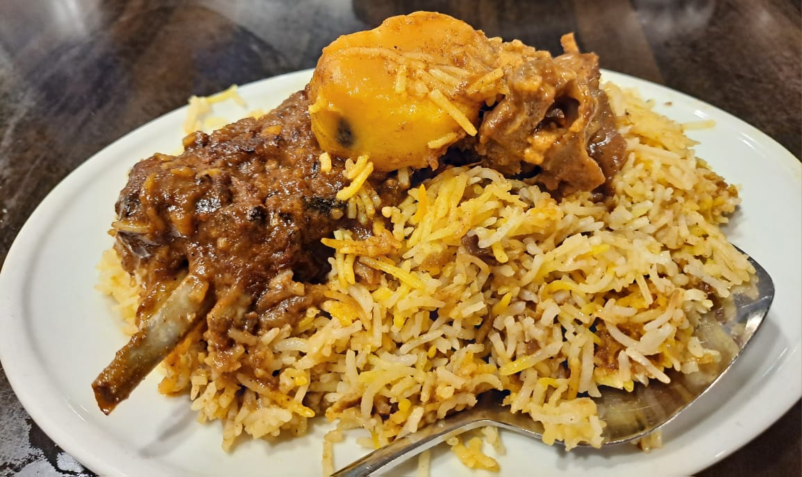
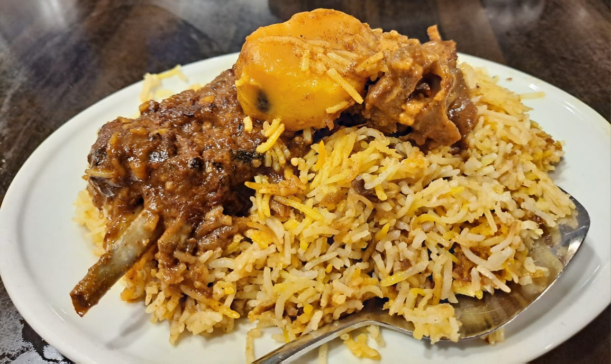
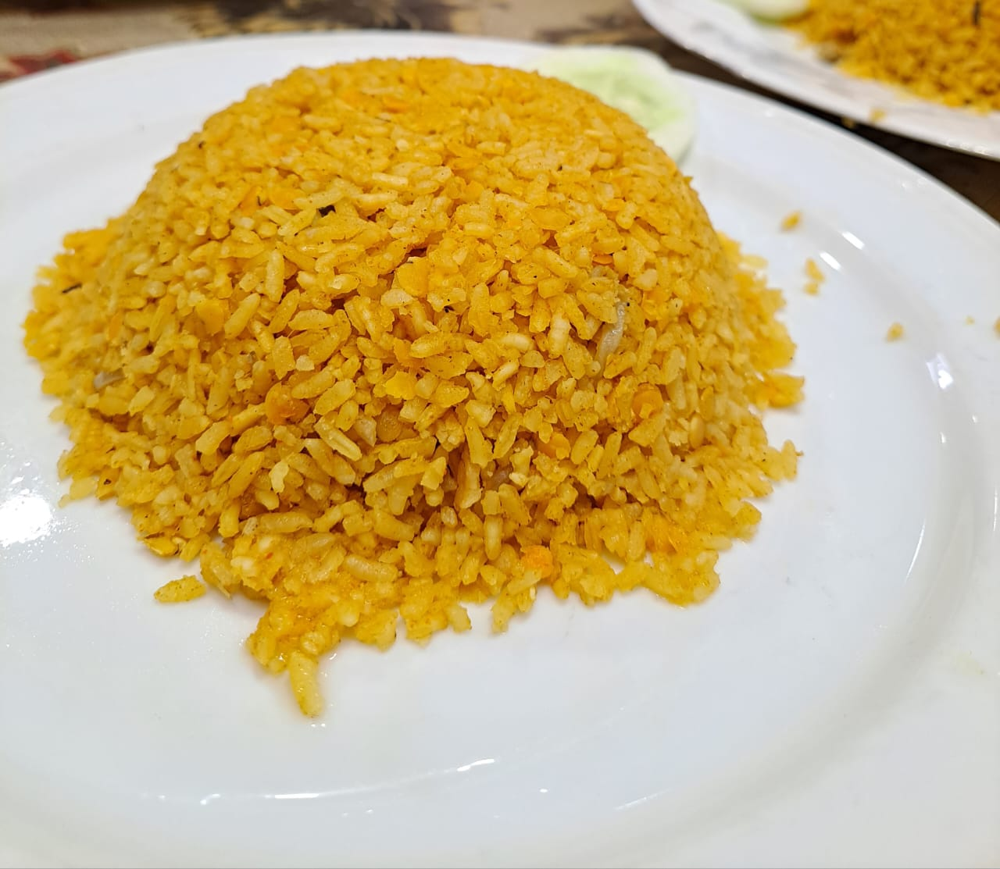
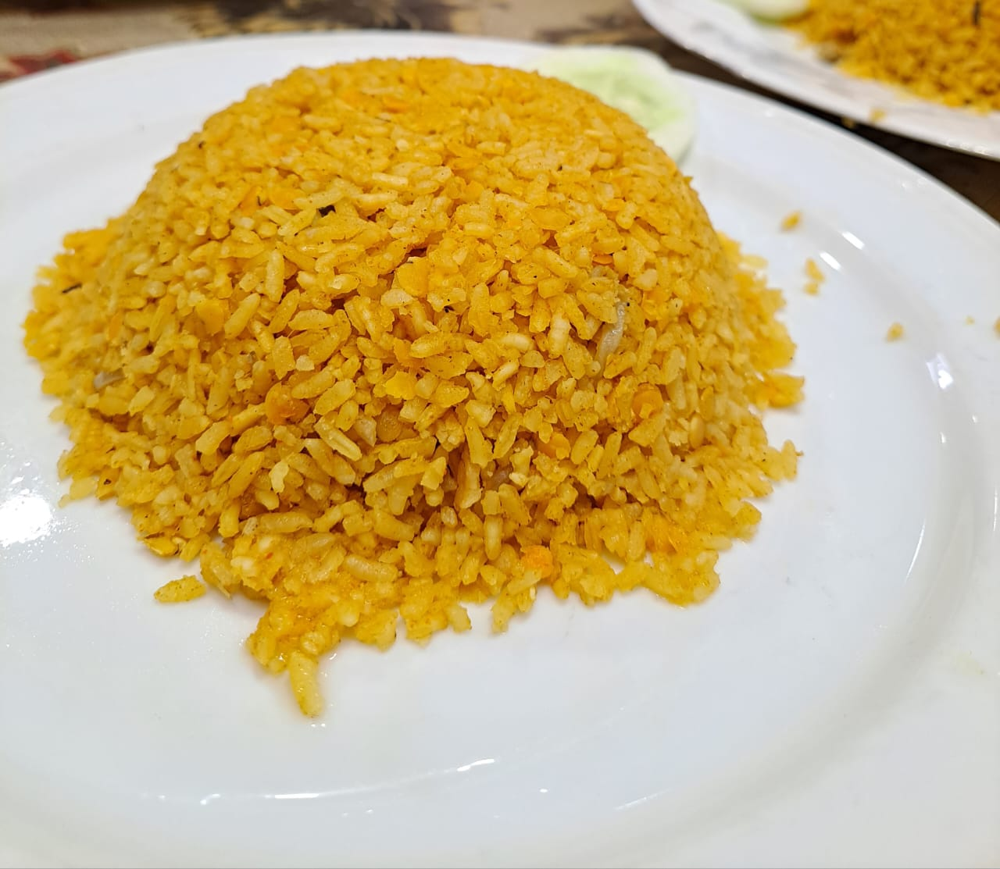
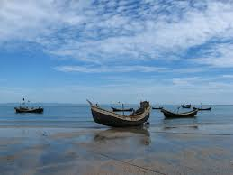

This blog is about our rag tour of our university (HSTU). About 35 students and 3 teachers attended this tour. We visited Sajek, Rangamati, Bandarban, Cox's Bazar, and Saint Martin Island.
What I Bought
- Handmade chador from Rangamati
- Hatpakha (hand fan)
- Beautiful bangles
- Chocolates
- Comfortable sandals
- Pearl jewelry from Cox's Bazar
- Stylish bracelets
My Favorite Food
Some of my favorite foods bring unique flavors and comfort. They include:
- Laitta fish fry
- Biriyani from Kacchi Dine
- Fish BBQ
- Hillside chicken
- Pickles
- Fish vorta
- Khichuri
 

 

Saint Martin: My Favourite Place

Saint Martin's Island is a beautiful coral island in the Bay of Bengal, known for its crystal-clear waters and vibrant marine life. With swaying coconut trees and a starry sky at night, it feels like a paradise.
It’s a place where nature and serenity come together perfectly. Watch a video about Saint Martin.
A Poem for Saint Martin
"On sands so soft, where waves meet the shore,
I find peace that I long for more.
Sun above shines with warmth so true,
While waves wash sands in colors of blue.
Saint Martin, you hold my heart,
In your embrace, I never want to part."